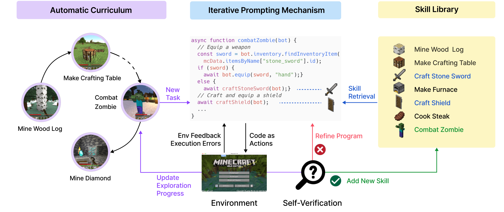

Voyager
探索的产物是下次还能调用的技能代码，经验才有机会累积。
Voyager: An Open-Ended Embodied Agent with Large Language Models
Minecraft 的 160 次提示预算内：钻石工具只在完整 Voyager 的 3 次运行中成功 1 次，无技能库版本为 0/3。
01这篇要解决什么？
已熟悉 Agent 的读者容易把 Voyager 理解成多轮 ReAct；真正要记的是它把“下一个学什么”和“过去学过什么”都变成持久机制。环境不是实体机器人，而是 Minecraft，它适合观察课程、代码技能复用与持续探索之间的关系。
02先看一个场景
智能体刚出生在 Minecraft 的森林里，物品栏是空的，没有人给它任务。它既要自己决定练什么，又要在做成之后把本领留下来；如果每次都从零写一段程序、用完就丢，后面做木镐时还得重新发现怎么采木头。
03方法怎样运转？

- 01
自动课程：让 GPT-4 按当前能力提出下一个目标
课程提示由四部分拼成：鼓励多样性并限制难度的指令（“目标是发现尽可能多不同的东西”“下一个任务不该太难”）、智能体当前状态（物品栏、装备、附近方块与生物、生物群系、时间、生命与饥饿值、坐标）、已完成与已失败的任务清单，以及一段由 GPT-3.5 自问自答生成的补充上下文——用小模型做这类常规文本任务是出于预算考虑。课程温度设为 0.1 以鼓励任务多样，系统其余部分温度都是 0。这个过程自下而上展开，论文把它看作新颖性搜索的上下文版本。
- 02
技能库：向量数据库，键是描述的嵌入
每条通过验证的技能以可执行程序的形式存入一个向量数据库，值是程序本身，键是这段程序描述的嵌入向量，描述由 GPT-3.5 生成、嵌入用 text-embedding-ada-002。检索时不直接拿任务名去查：先让 GPT-3.5 针对新任务写一段笼统的解题建议，把它与环境反馈拼成查询上下文，再取回最相关的 5 条技能。用程序而不是轨迹做记忆单元，是因为程序可组合、可读，也能被后续程序当子函数调用。
- 03
代码生成：动作空间是 JavaScript 程序
生成提示包含五块内容：编码规范（“这个函数会被复用来构造更复杂的函数，所以要写得通用”）、控制原语 API 与刚才检索到的技能、上一轮的代码连同环境反馈、执行报错与批评意见、智能体当前状态，以及要求先推理再写码的思维链引导。动作空间选程序而不是底层电机指令，是因为程序天然能表达时间跨度长、可组合的行为。执行靠现成的 Mineflayer JavaScript API，仿真环境搭在 MineDojo 上。
- 04
三类反馈迭代修正，自验证决定入库还是换题
环境反馈来自控制原语内部的 bot.chat() 调用（例如“做不了铁胸甲，还差 7 块铁锭”），执行报错来自代码解释器，自验证则是另起一个 GPT-4 实例充当评论者，拿到当前状态与任务后回答程序有没有完成任务，失败时还给出一段怎么改的批评。这三样都拼回下一轮的生成提示。循环有两个出口：自验证通过，就把程序连同描述的嵌入写进技能库，并向课程模块要下一个目标；连续 4 轮代码生成仍然卡住，就放弃这个任务、换一个。
while True:
task = GPT4(课程提示: 状态 + 已完成/已失败清单 + GPT3.5 自问自答的补充) # 温度 0.1
q = embed(GPT3.5("怎么做" + task) + 环境反馈) # text-embedding-ada-002
skills = vecdb.topk(q, k=5) # 键是技能描述的嵌入
code = feedback = error = critique = ""
for r in range(4): # 4 轮内仍卡住就换任务
code = GPT4(编码规范 + Mineflayer API + skills + code + feedback + error + critique + 状态)
feedback, error = run_in_minecraft(code) # bot.chat() 与解释器报错
ok, critique = GPT4_critic(agent_state, task) # 另一个 GPT-4 实例当评论者
if ok:
desc = GPT3.5(code)
vecdb.add(key=embed(desc), value=code) # 只有自验证通过才入库
break方法与结果的原文定位见本页引用。
04跟着这个场景走一遍
教学推演：回到上面的场景。第一步，课程模块把这份状态连同空的已完成清单送给 GPT-4，它在“发现尽可能多不同的东西”且“别太难”的约束下提出“采集木头”。第二步，带着这个任务去技能库检索：先让 GPT-3.5 写一句笼统建议，嵌入后取回最相关的 5 条技能——此刻库是空的，什么也取不到，后面学会采木头之后再问“做木镐”，取回的就会是采木头那条程序。第三步，GPT-4 拿着编码规范、Mineflayer 的控制原语、检索到的技能和当前状态，写出一段 JavaScript 函数。第四步，程序跑进 Minecraft，原语里的 bot.chat() 回报“还差 2 块木板”，解释器另外抛出一个不存在的方块名导致的报错，这两样连同批评一起拼回提示重写；自验证的 GPT-4 实例看过状态后判定任务完成，程序才连同 GPT-3.5 写的描述与其嵌入进入技能库，课程模块随即提出“做木镐”。如果四轮改下来自验证仍不通过，这个任务就被记进失败清单、换题。这套机制真正积累的是可检索的代码与索引，不是控制器参数——论文明说它依赖高层 Mineflayer 接口，不解决三维感知与底层运动控制；而且判定“做成了没有”的评论者与写代码的是同一族模型，通过与否并不是独立真值。下一篇 VoxPoser 换的正是这一层：它不再依赖预定义原语，而是让语言直接落到三维空间里的连续目标上。
05实验到底表现怎样？
作者在 Minecraft 比较 ReAct、Reflexion、AutoGPT 和 Voyager；表 1 以提示迭代次数衡量工具科技树进展，上限 160，进行 3 次运行。它不是实体机器人接触操作测试。
作者报告的实验结果 · v2
| 方法 | 木工具：提示次数 / 成功运行 | 铁工具：提示次数 / 成功运行 | 钻石工具 |
|---|---|---|---|
| AutoGPT | 92 ± 72 / 3/3 | 135 ± 103 / 3/3 | 0/3 |
| Voyager 无技能库 | 7 ± 2 / 3/3 | 29 ± 11 / 3/3 | 0/3 |
| 完整 Voyager | 6 ± 2 / 3/3 | 21 ± 7 / 3/3 | 102 / 1/3 |
原始证据：方法：§2 ↗ · 探索结果与消融：§3 / 表 1 ↗
技能库的价值更容易在较深的任务链中观察，但钻石里程碑的成功率仍只有 1/3。不能只记“到达钻石”，也应记它没有在所有运行中稳定达到。提示次数是预算单位，不能直接等同墙钟时间或机器人交互成本。
06收益来自哪里，又停在哪里？
消融与机制证据
去掉技能库后，石工具的平均提示次数甚至是 9，而完整系统为 11；局部早期指标不是处处单调改善。铁工具与钻石阶段更能体现累积复用的意义。
结论的适用边界
Minecraft 提供的状态、动作接口和复位条件与物理机器人相差很大；游戏内技能代码的可复用不直接证明对传感器误差、抓取接触或本体变化的鲁棒性。模型来源上这套系统没有任何梯度训练：GPT-4（gpt-4-0314）负责课程、代码生成与自验证，GPT-3.5（gpt-3.5-turbo-0301）负责生成技能描述、自问自答与检索查询的改写，嵌入用 text-embedding-ada-002，动作执行靠现成的 Mineflayer JavaScript API，环境是 MineDojo。作者自己构建的是提示、那个向量数据库以及迭代循环本身，所以“终身学习”积累的是代码条目与检索索引，不是控制器参数——论文也直言不处理三维感知与传感运动控制。还有一点需要保留：自验证的评论者与代码生成者同属一族模型，入库标准因此不是独立真值，库里可能混入判定错误的条目。
07放回全书的脉络
把这个框架带到 Playful 时，要补上物理任务的提出、有效性检查与验证；带到 ASPIRE 时，经验还可以是跨任务修复策略，而不只是成功代码。
08把阅读变成一个小研究
选一个可脚本控制的小环境，在相同交互预算下比较：无记忆、整段轨迹记忆、可调用函数库。使用未见组合任务测试迁移。
先自己回答：这项实验怎样才有解释力？
至少记录库大小、检索命中、技能实际调用及失败传播。更多技能不必然更好，错误或重复条目也可能扩大上下文并误导调用。
- 用自己的话说出这篇改变了哪个模块。
- 画出它的输入、输出和一次失败如何被处理。
- 复述一个结果，同时说清基线、指标与实验条件。这一问不给答案，材料在第 05 节。
先自己答，再看前两问的参考答案
这篇改了哪个模块改的是经验的存放位置与课程的来源：探索的产物不是参数更新，而是一段通过验证的 JavaScript 程序，连同它的描述嵌入写进向量数据库，以后靠检索取回来当子函数调用；练什么也不由人指定，而是课程模块按当前状态与已完成、已失败清单自己提。动作空间随之从底层指令换成了程序。这套系统没有任何梯度训练，底层执行完全依赖现成的 Mineflayer 接口，论文也直言不处理三维感知与传感运动控制。
输入、输出与一次失败如何被处理输入是智能体在 Minecraft 里的状态（物品栏、装备、附近方块与生物、生物群系、时间、生命与饥饿值、坐标）、已完成与已失败的任务清单、检索回来的 5 条技能，以及上一轮的代码连同三类反馈；其中状态与环境反馈由 Mineflayer 提供，报错由代码解释器提供，检索查询则先让 GPT-3.5 写一段笼统建议再嵌入去查。输出是一段 JavaScript 程序，交给 Mineflayer 在 Minecraft 里执行；通过自验证的程序连同 GPT-3.5 写的描述与其嵌入一起写进技能库。失败处理这条通路很完整：环境反馈来自控制原语内部的 bot.chat() 调用，执行报错来自代码解释器，另起一个 GPT-4 实例充当评论者回答任务有没有完成并给出怎么改的批评，三样一并拼回下一轮的生成提示重写代码，连续 4 轮仍然卡住就放弃这个任务、记进失败清单并换题。需要留住的是评论者与代码生成者同属一族模型，入库标准因此不是独立真值。
探索的产物是下次还能调用的技能代码，经验才有机会累积。
↗带着位置回到原文
首发日期用于时间排序；以下方法与结果对应 v2。数据为论文作者报告，本讲义没有独立复现实验。
QA就这一页提问或讨论
对某个数字、某条边界或某个推演有疑问，欢迎直接留言：讨论按页面分开，回复会保留在 XinrunXu/awesome-agentic-robotics-papers 的 Discussions 里，需要一个 GitHub 账号。